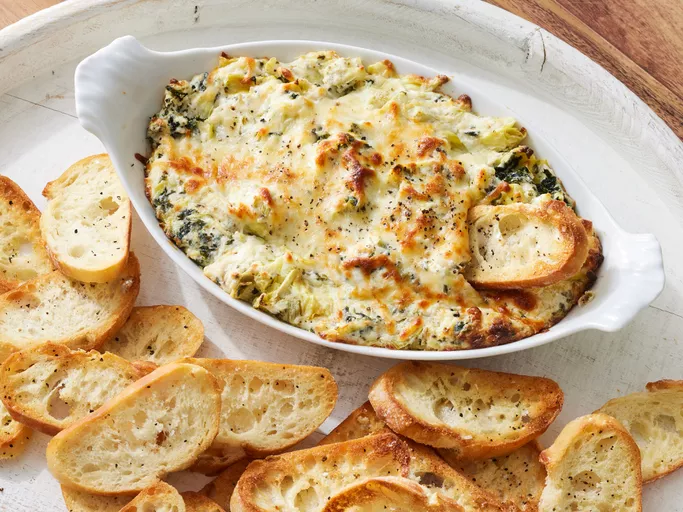

Hot Spinach Artichoke Dip

Description
Spinach artichoke dip is the best (and most delicious) way to get any party started.
This crowd-pleasing spinach artichoke dip recipe is sure to be a hit with your friends and famliy.
Ingredients
- Cream Cheese
- Mayonnaise
- Cheeses (Grated Parmesan, Romano and Mozzarella)
- Garlic
- Dried Basli
- Garlic Salt
- Salt
- Pepper
- Artichoke Hearts
- Spinach
Steps
- Mix all the ingredients apart from the Mozzarella.
- Transfer to a prepared baking dish and top with the left over cheese.
- Bake in preheated oven until bubbly.